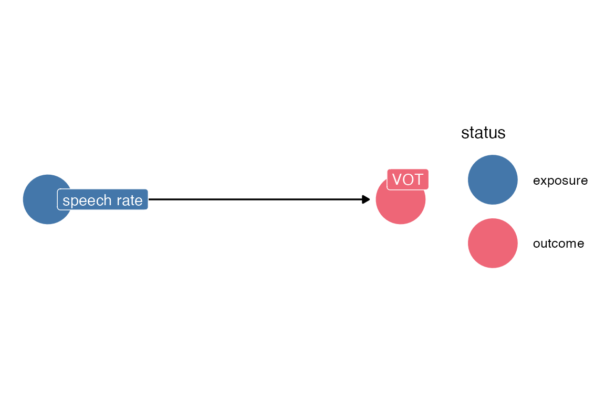

library(tidyverse)
library(ggdag)
library(broom)
Listening
Setup
set.seed(2023-9-25)source(here::here("_defaults.R"))Upshot
What I’ve learned
I get confused thinking about the causality DAGs in terms of models. The arrows and paths in the DAGs don’t directly translate to terms. in the models. An included term in a model won’t necessarily correspond to any simple path from the term to the outcome.
DAG typology
I’ve been reading up a bunch more about causal inference, how these DAGs work, and getting more comfortable with tools like {ggdag} and dagitty. So here’s my attempt to work through the “Confronting Confounding” section of chapter 6. I’ll try to make up linguistic examples as I go along.
The classic confounder: the fork
The classic confounding variable is one which is a common cause of both the outcome and the predictor of interest. For example, we might be interested in how speech rate affects the voice onset time of voiceless stops.
two variable DAG
dagify(
vot ~ rate,
labels = list(rate = "speech rate",
vot = "VOT"),
outcome = "vot",
exposure = "rate",
coords = tribble(
~name, ~x, ~y,
"vot", 1, 0,
"rate",0, 0
)
) |>
ggdag_status(use_labels = "label",
text = F)+
khroma::scale_color_bright()+
khroma::scale_fill_bright()+
theme_dag()
But, there are variables (observed or unobserved) that can be a common cause of both speech rate and VOT. For example, speech style.
three variable dag
dagify(
vot ~ rate + style,
rate ~ style,
labels = list(rate = "speech rate",
vot = "VOT",
style = "speech style"),
outcome = "vot",
exposure = "rate",
coords = tribble(
~name, ~x, ~y,
"vot", 1, 0,
"rate",0, 0,
"style",0.5, 1
)
) ->
three_dagCode
three_dag |>
ggdag_status(use_labels = "label",
text = F)+
khroma::scale_color_bright(na.value = "grey30")+
khroma::scale_fill_bright(na.value = "grey30")+
theme_dag()You can plot all of the paths between speech rate and VOT with ggdag_paths(), but to be honest, I still struggle with reading the fork as a path “from” speech rate, “to” VOT because of the directions of the arrows.
tidy_dagitty(three_dag) |>
dag_paths() |>
node_status()|>
filter(!is.na(path)) |>
ggplot(
aes(x = x, y = y, xend = xend, yend = yend)
)+
geom_dag_point(aes(color = status))+
geom_dag_edges()+
geom_dag_label_repel(aes(label = label))+
khroma::scale_color_bright(na.value="grey60", guide = "none")+
facet_wrap(~set)+
theme_dag()It’s easier for me to see what each of the paths are by using dagitty::paths()
dagitty::paths(three_dag)$path[1] "rate -> vot" "rate <- style -> vot"In order to accurately estimate the direct effect of speech rate on VOT, we need to “condition on” or “adjust for” speech style. That is, we need to include it in the model. You can get the adjustment sets from {ggdag} or {dagitty}.
ggdag_adjustment_set(three_dag, use_labels = "label", text = F)+
theme_dag()I also find this graphical representation a little bit confusing, with the adjusted-for variable kind of just floating there? The model we wind up fitting is going to look like
vot ~ rate + styleMeaning we are going to get an estimate of style -> vot. Maybe one of these mermaid diagrams is the way to go? Here I’ve got the original DAG with the “backdoor” open. Links that aren’t included in the model are in dotted lines.
flowchart LR r["rate"] ==> v["vot"] s(["style"]) -.-> v s -.-> r style s stroke-dasharray: 5 5
vot ~ rateBy including style in the model, you’re blocking its flow backward through rate.
flowchart LR r["rate"] ==> v["vot"] s["style"] ==> v s x-.-x r
vot ~ rate + styleOther DAG configurations
The “elemental” DAG configurations are
The Pipe
The pipe is the important configuration for “post-treatment bias.
dagify(
schwa ~ vtl,
vtl ~ height,
outcome = "schwa",
exposure = "height",
labels = list(schwa = "schwa formants",
vtl = "vocal tract length",
height = "height")
) ->pipe_dagCode
pipe_dag |>
ggdag_status(use_labels = "label", text = F)+
theme_dag()+
khroma::scale_color_bright(na.value = "grey60")+
khroma::scale_fill_bright(na.value = "grey60")dagitty::paths(pipe_dag)$paths[1] "height -> vtl -> schwa"There’s no direct causal effect of height on schwa formants, but if you wanted the total effect, you’d want to just use
formants ~ heightIncluding vocal tract length will block the “flow” from height. Just modeling schwa formants based on height allow the relationship to “flow” through vocal tract length, which wasn’t included in the model.
flowchart LR h[height] ==> v([vtl]) ==> s[schwa formants] style v stroke-dasharray: 5 5
If VTL is included in the model, it blocks the “flow” from height.
flowchart LR h[height] x-.-x v[vtl] ==> s[schwa formants]
The collider
Colliders are still confusing to me. Let’s imagine a situation where both word frequency and segment markedness both increase the likelihood of lenition, and we want to see if there’s a relationship between segment markedness and word frequency
dagify(
lenition ~ freq + markedness,
outcome = "markedness",
exposure = "freq",
labels = list(
lenition = "lenition rate",
freq = "word frequency",
markedness = "segment markedness"
)
) ->
collide_dagCode
collide_dag |>
ggdag_status(use_labels = "label",
text = F)+
theme_dag()+
khroma::scale_color_bright(na.value = "grey60")+
khroma::scale_fill_bright(na.value = "grey60")dagitty::paths(collide_dag)$paths[1] "freq -> lenition <- markedness"There’s no direct effect of frequency on markedness, so markedness ~ freq should have no effect. But by including the lenition rate, you’d open a causal pathway between the two. I’m not even sure how to indicate this in a mermaid diagram. I need to sketch this out “manually”.
Without “lenition” included in the model, there’s no causal pathway open between markedness and frequency.
But, when you add lenition, it “opens up” a causal pathway where before there wasn’t one.
Revisiting Waffle House Divorces
data(WaffleDivorce, package = "rethinking")head(WaffleDivorce) |> rmarkdown::paged_table()So, the possible DAG here is
dagify(
d ~ w + m + a,
w ~ s,
m ~ s + a,
labels = list(
d = "divorce rate",
w = "waffle houses",
a = "age at marriage",
m = "marriage rate",
s = "south"
),
outcome = "d",
exposure = "w"
) -> waffle_dagwaffle_dag |>
ggdag_status(
use_labels = "label",
text = F
)+
theme_dag()+
khroma::scale_color_bright(na.value = "grey60")+
khroma::scale_fill_bright(na.value = "grey60")We can get the paths from waffle houses to divorce rate:
dagitty::paths(waffle_dag)$paths[1] "w -> d" "w <- s -> m -> d" "w <- s -> m <- a -> d"It looks like the most parsimonious thing to do would be to include “south” in the model. Simply including “marriage rate” would actually open up a path, because marriage rate is a collider. According to dagitty (and the book), if we include marriage rate, we also need to include age, to close the path?
library(brms)
library(tidybayes)WaffleDivorce |>
mutate(
across(
where(is.double),
\(x) (x - mean(x))/sd(x)
),
WaffleHouses = (WaffleHouses-mean(WaffleHouses))/sd(WaffleHouses)
)->
waffle_to_modJust the waffle mod
w_d_mod <- brm(
Divorce ~ WaffleHouses,
data = waffle_to_mod,
backend = "cmdstanr",
prior = prior(normal(0, 3), class = b),
file = "w_d"
)Now, with the South adjustment
w_d_s_mod <- brm(
Divorce ~ WaffleHouses + South,
data = waffle_to_mod,
backend = "cmdstanr",
prior = prior(normal(0, 3), class = b),
file = "w_d_s"
)With the inappropriate adjustment for just “marriage”.
w_d_m_mod <- brm(
Divorce ~ WaffleHouses + Marriage,
data = waffle_to_mod,
backend = "cmdstanr",
prior = prior(normal(0, 3), class = b),
file = "w_d_m"
)With the marriage and age adjustment
w_d_m_a_mod <- brm(
Divorce ~ WaffleHouses + Marriage + MedianAgeMarriage,
data = waffle_to_mod,
backend = "cmdstanr",
prior = prior(normal(0, 3), class = b),
file = "w_d_m_a"
)Now, just to grab estimates for the effect of WaffleHouses for these all.
Code
list(
`~waffle` = w_d_mod,
`~waffle + south` = w_d_s_mod,
`~waffle + marriage` = w_d_m_mod,
`~waffle + marriage + age` = w_d_m_a_mod
) |>
map(
~ spread_draws(.x, b_WaffleHouses)
) |>
list_rbind(
names_to = "model"
) |>
mutate(model = fct_reorder(model, b_WaffleHouses)) |>
ggplot(aes(b_WaffleHouses, model))+
geom_vline(xintercept = 0)+
stat_halfeye()I wonder whether including a random intercept of location would have a similar effect adjusting for “South”?
w_d_L_mod <- brm(
Divorce ~ WaffleHouses + (1|Loc),
data = waffle_to_mod,
backend = "cmdstanr",
prior = prior(normal(0, 3), class = b),
file = "w_d_l"
)Code
list(
`~waffle` = w_d_mod,
`~waffle + south` = w_d_s_mod,
`~waffle + marriage` = w_d_m_mod,
`~waffle + marriage + age` = w_d_m_a_mod,
`~waffle + (1|location)` = w_d_L_mod
) |>
map(
~ spread_draws(.x, b_WaffleHouses)
) |>
list_rbind(
names_to = "model"
) |>
mutate(model = fct_reorder(model, b_WaffleHouses)) |>
ggplot(aes(b_WaffleHouses, model))+
geom_vline(xintercept = 0)+
stat_halfeye()Well, not much!